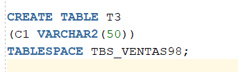
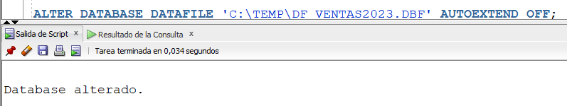
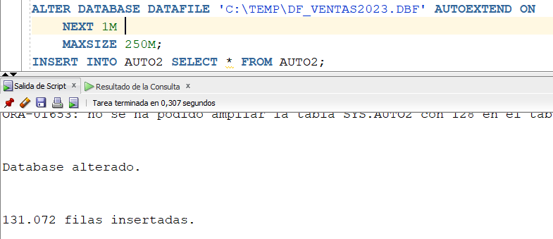

Para gestionar el almacenamiento en Oracle, debemos tener presente que existen dos tipos de almacenamiento: lógico y físico.
Para el almacenamiento físico, la única estructura que existe es el DataFile. Para el almacenamiento lógico, existen diversas estructuras: Base de Datos, Tablespace, Segmentos, Extensiones y Bloques.
Es de advertir que la gestión de almacenamiento se puede hacer en cualquiera de los dos tipos de almacenamiento.
La siguiente imagen es un resumen de las diferentes estructuras de almacenamiento existentes y su relación.
Fuente Propia
Como se puede observar, una base de datos está compuesta de uno o más tablespaces, los cuales tienen asociados uno o varios segmentos. A su vez, cada segmento, puede tener una o varias extensiones, las cuales pueden tener incluidos uno o más bloques de datos. La anterior es la explicación de las estructuras lógicas de almacenamiento y su relación.
Con respecto a la única estructura de almacenamiento físico de datos que existe, el DataFile, podemos afirmar que un tablespace puede tener asociados uno o muchos DataFiles. Es importante entender que cada DataFile corresponde o está incluido en un solo tablespace.
Las ideas principales con respecto a estas estructuras de almacenamiento son las siguientes:
● Bloque: Mínima unidad de almacenamiento. Por defecto, 8K
● Extensión: Conjunto de bloques CONTIGUOS
● Segmento: Conjunto de Extensiones. Todo lo que ocupe espacio en una base de datos, es un segmento: segmento de tablas, segmento de índices, segmento de vistas materializables, etc.
● Tablespace: Conjunto de Data Files. Un segmento puede estar distribuido en varios datafiles, pero de UN MISMO TABLESPACE.
● Base de Datos: Conjunto de Tablespaces.
A continuación, miremos un poco más en detalle, cómo está conformado un bloque de datos en Oracle:
Fuente Propia
Un bloque se divide en tres partes: cabecera, espacio ocupado por datos, espacio libre para datos.
Una fila / tupla se almacena como se muestra en la anterior imagen.
El contenido de la cabecera, el cual corresponde a metadatos, son directorio de tablas y directorio de filas, entre otras cosas.
Cuando se lee una tupla de una tabla, Oracle sube al SGA el bloque completo donde está esa tupla. Oracle trabaja a nivel de bloques, no a nivel de tuplas.
A continuación, vamos a mirar unos comandos útiles que se pueden ejecutar para realizar las diferentes actividades referentes a la gestión de almacenamiento en Oracle.
| La forma básica para crear un nuevo tablespace es con la instrucción que se ve a la izquierda. Se debe especificar el nombre del tablespace, mínimo un datafile asociado y el tamaño de dicho datafile. Para el tamaño del datafile, se puede poner M(Megas), G(Gigas), T(Teras). Si no se especifica nada, lo toma en bytes. | |
| Es posible crear un tablespace con dos o más datafiles asociados. El comando para hacerlo se encuentra a la izquierda. | |
|
Para poder mirar algunos metadatos referentes a los tablespaces existentes, podemos ejecutar las consultas mostradas. Cada consulta entrega información detallada acerca de ellos. Dichos comandos deben ser ejecutados con el usuario SYS.
|
Al ejecutar SELECT * FROM DBA_TABLESPACES, obtenemos la siguiente información:
De las anteriores imagenes, podemos mirar que dicho comando nos genera un inventario de los tablespaces existentes. Si miramos un poco más en detalle la información del tablespace recién creado, TBS_VENTAS98, encontramos el nombre del tablespace, el tamaño del bloque de datos que por defecto es 8192 bytes, el estado del tablespace es ONLINE, los contenidos de dicho tablespace es permanente (PERMANENT), el manejo de los especios de sus segmentos está automático, es decir, lo gestiona Oracle, entre otras cosas.
Al ejecutar SELECT * FROM V$DATAFILE, obtenemos la siguiente información:
|
Podemos ver que, para este caso, saca un listado de todos los datafiles existentes en la instancia. Y cada datafile tiene un ID único, llamado FILE#. Se ve que el datafile correspondiente al tablespace TBS_VENTAS98, llamado DF_VENTAS_0.DBF, tiene el FILE# 25. Lo que existe en V$DATAFILE, la cual es una vista dinámica, es un resumen de lo que está almacenado en DBA_DATA_FILES, la cual se muestra a continuación. |
Al ejecutar SELECT * from DBA_DATA_FILES, se obtiene lo siguiente:
Como se puede observar, el datafile DF_VENTAS_0.DBF corresponde al tablespace VENTAS98, su FILE# es 25, su tamaño es 3 Megas aproximadamente (3145728 bytes), tal y como está especificado en el momento de crear el tablespace. Estos 3145728 bytes corresponden a 384 bloques de datos (3145728 / 8192). El estado de dicho datafile es AVAILABLE, disponible.
También podemos mirar que el datafile no se autoextiende. Cuando el datafile se llena, y tratamos de grabar algo más en él, saca un error.
Y en USER_BYTES, el espacio disponible en ese datafile para grabar datos es un poco más de 2 Megas. Hay que tener en cuenta que al crear un datafile, hay una porción de espacio ocupado por metadatos.
Por otra parte, el tablespace TEMP, que es usado por Oracle como un espacio temporal para almacenar datos de cálculos, ordenaciones, etc., también tiene sus datafiles asociados. La diferencia es que los metadatos de los datafiles del tablespace TEMP, se encuentran en V$TEMPFILE y DBA_TEMP_FILES. La información que contienen dichas vistas es prácticamente la misma que la mostrada anteriormente.
Si queremos mirar el espacio disponible que tiene cada tablespace, podemos consultar la vista DBA_FREE_SPACE. El resultado del comando SELECT * FROM DBA_FREE_SPACE es el siguiente:
|
Podemos ver que el tablespace VENTAS98 tiene un FILE# 25, como ya lo hemos dicho anteriormente. Tiene un espacio disponible de 2097152 bytes, correspondientes a 256 bloques de datos. Acá, para un mismo tablespace, pueden aparecer varios registros. Cada registro corresponde a un bloque de datos de dicho tablespace. Recuerde que un tablespace puede tener muchos bloques de datos. |
Para mirar el manejo de espacio en los tablespaces, vamos a crear una tabla en el tablespace recien creado. Esto lo hacemos con la primera instrucción de la tabla siguiente. Y luego, a dicha tabla, le vamos a insertar 1000 tuplas de prueba, a través de la segunda instrucción de la tabla.
 |
Al volver a consultar el espacio disponible en el tablespace VENTAS_98, vemos que éste se redujo:
| Se puede observar que el espacio disponible en el tablespace VENTAS_98 es 1900544 bytes, correspondientes a 232 bloques de datos. Antes de ejecutar la instrucción de inserción de datos en la tabla, el espacio disponible era de 2097152 bytes, lo cual demuestra que el espacio disponible se redujo. |
Para modificar el tamaño de un datafile , ejecutamos el siguiente comando:
|
Recuerde que originalmente cuando fue creado, el datafile DF_VENTAS_0.DBF tenía un tamaño de 3 megas aproximadamente. Vamos a alterar su tamaño a 10 megas. Se puede notar la cláusula RESIZE. |
|
| Despues de ejecutar el comando anterior, podemos ver que el tamaño del datafile DF_VENTAS_0.DBF es de 10482760 bytes, es decir, 10 megas. | |
| Y también, como se puede ver, el espacio disponible en el tablespace TBS_VENTAS98 aumentó a 9240576 bytes. Al aumentar el tamaño de un datafile, aumenta el espacio disponible del tablespace asociado a dicho datafile. |
Para agregar un nuevo datafile a un tablespace, ejecutamos el siguiente comando:
| Acá agregamos un nuevo datafile, llamado DF_VENTAS_98.DBF, de tamaño 10 megas. | |
| Como podemos observar, en la vista DBA_FREE_SPACE ya aparecen dos tuplas para el tablespace TBS_VENTAS98, una por cada datafile que ya posee. Miren que el FILE# del nuevo datafile es el 26, con un espacio disponible de 9437184 bytes. |
Para borrar un datafile, se ejecuta el siguiente comando:
| Para borrar un datafile, éste debe estar vacío. De lo contrario, no se puede borrar el datafile individualmente, sino que hay que borrar el tablespace. |
Para eliminar un tablespace, la mejor manera de hacerlo es con el siguiente comando:
|
Cuando un tablespace no está vacío, debemos incluir la cláusula INCLUDING CONTENTS para decir que se borre el tablespace incluido su contenido. La cláusula DATAFILES le dice al comando que ademas de borrar la estructura logica, es decir el tablespace, tambien borre fisicamente los datafiles asociados. Al hacer un SELECT a la tabla ARTICULO, creada anteriormente en el tablespace borrado, ya no existe dicha tabla. |
Por otra parte, procedamos a hablar de los estados de un tablespace:
|  | Vamos a crear una tabla en el tablespace TBS_VENTAS98, que se volvio a crear anteriormente. |
|
Uno de los estados posibles de un tablespace es READ ONLY. Con el comando mostrado, ponemos el tablespace en dicho estado. Al mirar los metadatos de dicho tablespace, en la vista DBA_TABLESPACE, vemos que dicho tablespace ya está en estado READ ONLY, como se ve en la siguiente imagen. |
|
|
Cuando tratamos de insertar una nueva tupla en la tabla T3, la cual está creada en el tablespace que está en estado READ ONLY, saca el siguiente error: |
|
|
El tablespace está en estado READ ONLY, lo cual significa que no se puede grabar nada en él. |
|
|
Vamos a volver a poner el tablespace en estado ONLINE. Al tratar de insertar datos en la tabla T#, sigue saliendo el mismo error anterior. Esto sucede debido a que cuando un tablespace está en estado READ ONLY, para volver a activar la grabación en él, debemos ponerlo en estado READ WRITE, no ONLINE. |
|
|
Con este comando, ya podemos grabar nuevas tuplas en la tabla T3. |
|
|
Otro de los estados en los cuales puede estar un tablespace es OFFLINE NORMAL. En este estado, el tablespace no está disponible para ninguna acción. Si intentamos hacer un INSERT o un SELECT a la tabla T3, aparece el siguiente error: |
|
|
Para volver a activar el tablespace y poder hacer actividades en él, lo debemos poner en estado ONLINE. |
Por otra parte, para mover y/o renombrar un datafile lo debemos hacer con el comando siguiente:
| Si vamos a la carpeta TEMP, vemos que el nombre del datafile ha cambiado. |
Pasando a otro aspecto de los tablespaces, hay una manera de configurar un tablespace para que cuando se llene se pueda autoextender. Para ello, podemos ejecutar el comando siguiente:
| Con ese comando, estamos creando un tablespace llamado TBS_VENTAS2023, con un datafile asociado. Estamos poniendo el parametro AUTOEXTEND en ON para que su tamaño vaya creciendo dinámicamente. El parámetro NEXT significa que cuando el tablespace se llene, éste crezca en otro 1 Mega. Y el MAXSIZE significa que el tablespace crezca hasta un tamaño máximo de 250 megas. |
Si consultamos en este momento la vista DBA_DATA_FILES, vemos que el campo AUTOEXTENSIBLE está en YES, y que el tamaño del Data File es de 1 mega, su tamaño inicialmente configurado.
A continuación, vamos a crear una tabla dentro de dicho tablespace, le vamos a insertar muchas tuplas a dicha tabla y nos vamos a dar cuenta que el Data File se va a ir autoextendiendo, es decir, cuando se llene ese mega inicial que tiene de tamaño, se va a autoextender de a un mega más.
Luego de insertarle 131072 tuplas a la tabla, vemos que el tamaño del Data File ya ha crecido a 9437184 bytes, ha ido creciendo automáticamente.
Qué sucede si el Data File no tiene autoextensión activada? Deshabilitemos su autoextensión, y luego tratemos de insertarle una nueva tupla a la tabla. Vemos que genera un error porque ya el Data File no es capaz de crecer más.

Para volverlo habilitar, hacemos lo siguiente:

Y se puede observar que ya acepta grabación de nuevas tuplas en la tabla.
Tablespaces Temporales
Cuando consultamos los tablespaces temporales existentes, encontramos que hay un solo tablespace de este tipo, llamado TEMP.
La base de datos siempre tiene un tablespace temporal por default. Para consultar cual es el tablespace temporal por default, ejecutamos la siguiente instrucción. Vemos que el tablespace temporal por defecto es TEMP.
Podemos adicionar un nuevo tablespace temporal.
Volvamos a consultar los tablespaces temporales existentes.
Para cambiar el tablespace que usará el sistema por default, hacemos lo siguiente:
Podemos observar que el nuevo tablespace temporal por default es TEMP1.
Videos: